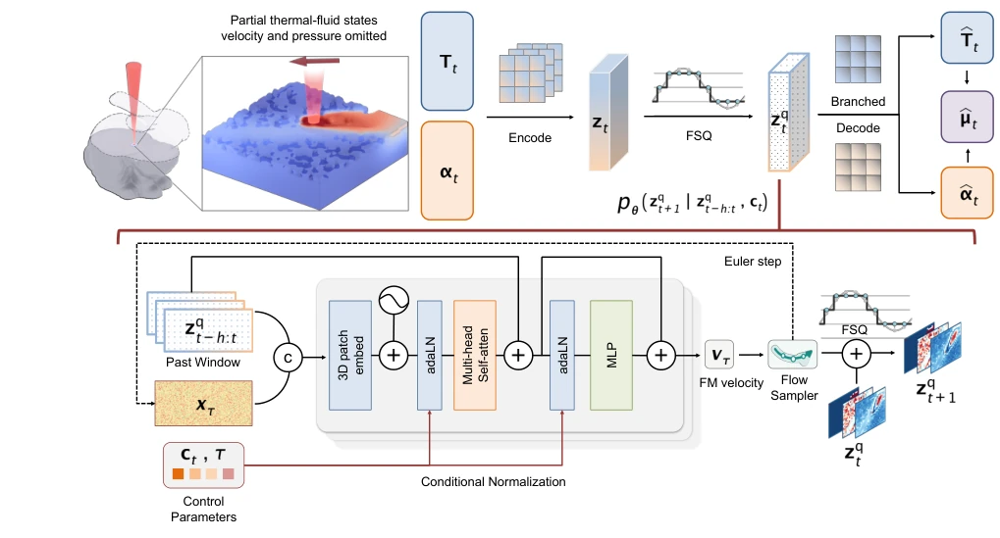
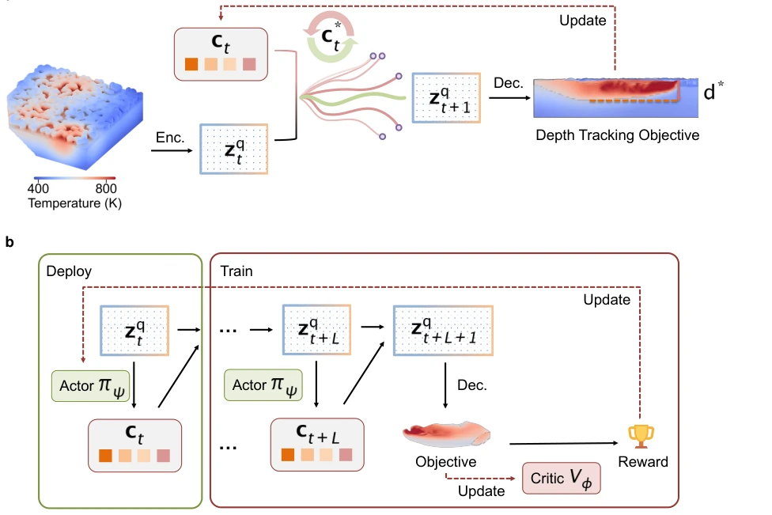
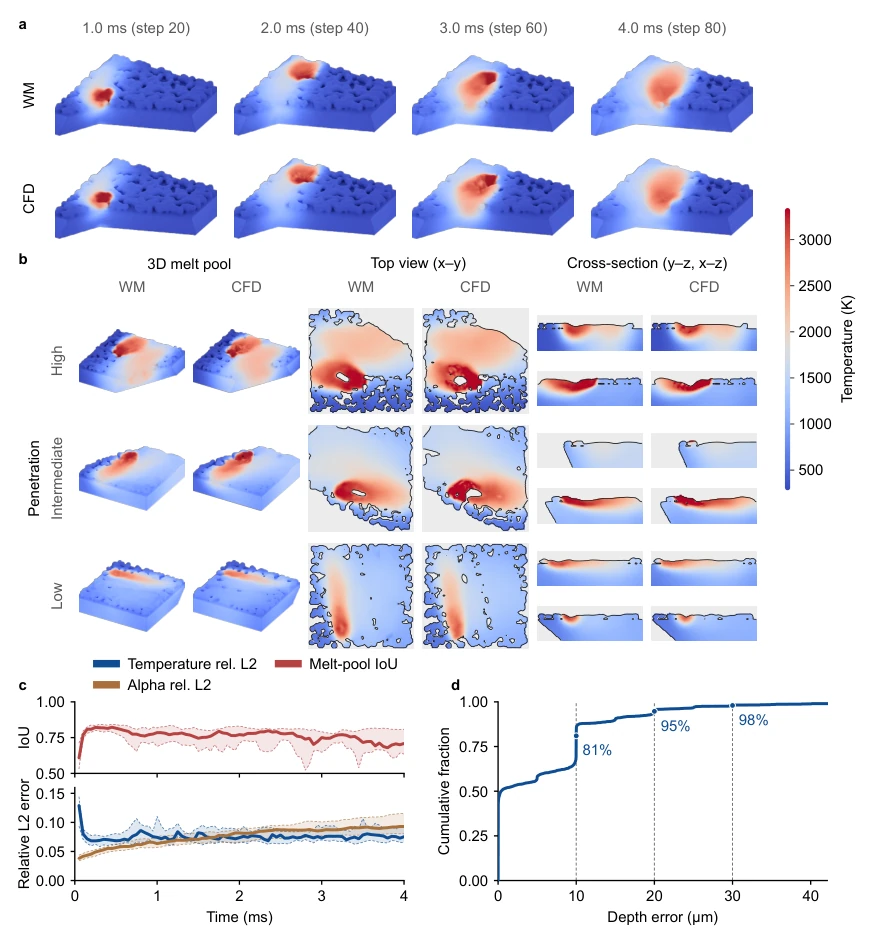
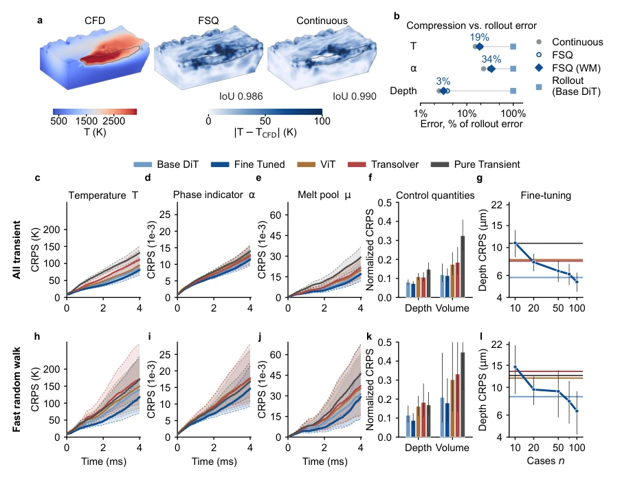
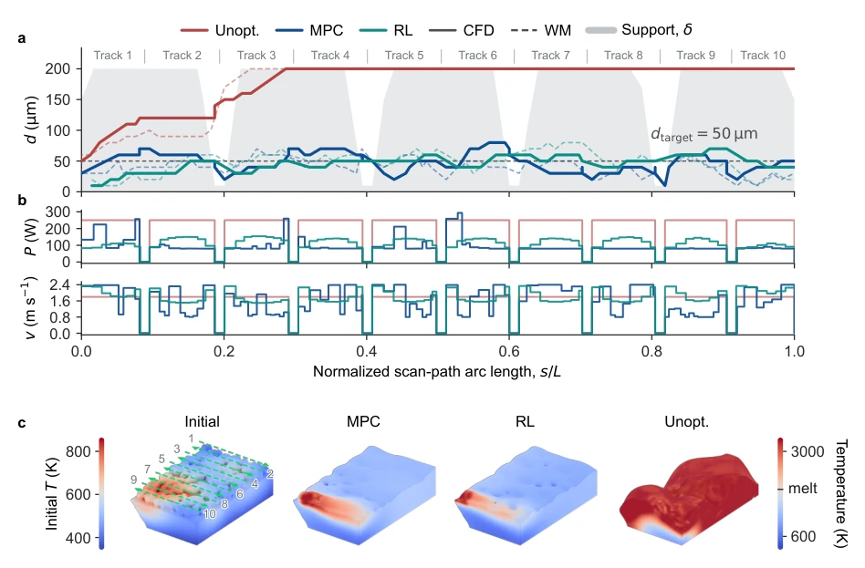

Generative World Models Enable Predictive Control of Laser Melt Pool Dynamics
Yiyang Yan, Markus Bambach, Mohamadreza Afrasiabi abspdf
论文点评Review
这篇论文把 World Model 从游戏和机器人搬到了激光制造里，算是 Embodied AI 的一次硬核跨界。作者用生成式潜变量动力学解决了传统确定性模型在递归预测中误差累积的问题，这点挺聪明，毕竟熔池里的流体和相变太复杂了。不过，别高兴太早，这玩意儿目前还在仿真里跑，真机部署还得解决传感器映射和延迟问题。虽然 RL 策略比 MPC 快 140 倍，但离真正的微秒级熔池控制还有距离，毕竟 12ms 的决策延迟在熔池生命周期里都够跑几圈了。总的来说，是个漂亮的 Proof of Concept，展示了生成式模型在物理控制中的潜力，但离“落地”还隔着一条 CFD 到实验台的鸿沟，毕竟没上真机之前，谁敢保证物理世界不给你惊喜？
This paper transfers World Models from games and robotics into laser manufacturing, constituting a hardcore crossover of Embodied AI. The authors employ generative latent variable dynamics to solve the error accumulation problem in recursive prediction of traditional deterministic models, which is quite clever, given that fluids and phase transitions in the melt pool are too complex. However, do not get too excited; this system is currently running in simulation, and real machine deployment still needs to solve sensor mapping and latency issues. Although the RL policy is 140 times faster than MPC, it is still far from true microsecond-level melt pool control, after all, a 12ms decision latency is enough to run several laps in the melt pool lifecycle. Overall, it is a beautiful Proof of Concept, demonstrating the potential of generative models in physical control, but it is still separated from "deployment" by a chasm from CFD to the experimental bench, after all, before going on the real machine, who dares to guarantee that the physical world won't give you a surprise?
Melt pool dynamics in Laser Powder Bed Fusion (LPBF) are extremely complex, involving fluids, phase transitions, and heat conduction. High-fidelity CFD simulations are too slow (minute-level) and cannot be used for real-time control [9, 10]. Existing sensors can only measure surface signals and cannot directly control three-dimensional melt pool depth [11]. Deterministic surrogate models (such as linear surrogates [12]) average out hidden variables (such as flow velocity) in recursive prediction, leading to distorted long-term predictions [28, 29]. World Models plan by imagining future trajectories and can handle partial observations and stochasticity [20-25]. This paper aims to utilize generative WM to achieve predictive control of melt pool depth, solving the problem where traditional methods cannot balance accuracy and speed, especially under complex geometries like overhang structures, where precise control of melt depth is needed to avoid lack of fusion or over-melting defects [5, 6]. Furthermore, existing controllers are mostly at the layer or vector level, lacking three-dimensional dynamic prediction capabilities and struggling to cope with rapidly changing thermal disturbances.
The overall framework is divided into three core stages: encoding, transition, and decision. First, a branch FSQ autoencoder is used to compress the temperature field and phase indicator field into discrete latent codes, preserving phase interface sharpness while quantifying magnitude through finite scalar quantization [32, 33], adding only a minor reconstruction cost compared to continuous bottlenecks. Second, the core is a generative latent dynamic transition model, adopting a Flow-Matching DiT architecture, predicting the next latent state based on historical latent states and control parameters (laser power/position), supporting differentiable recursive unfolding, effectively capturing the influence of unobserved flow velocities. Finally, the control layer provides two solutions: gradient-based MPC optimizes control sequences via backpropagation, and an amortized RL policy trained via SHAC directly outputs actions. The model is pre-trained on CFD data and fine-tuned on time-varying schedules, and the final control policy must be re-validated in CFD to ensure physical consistency and prevent the model from exploiting errors. Furthermore, FSQ quantization allows gradients to pass through the straight-through estimator, making end-to-end optimization possible, while Flow-Matching's linear probability path supports deterministic sampling, reducing computational overhead.

Fig. 1: Melt-pool WM with generative latent dynamics. Top: the autoencoder compresses the partially observed state Xt = (Tt, αt), without the full CFD thermal-fluid state, into a discrete code zq t . Two decoder branches reconstruct the smooth ˆTt and the sharp ˆαt from the shared latent code, and the liquid fraction ˆµt is computed from the reconstructed fields. Bottom: the transition pθ(zq t+1 | zq t−h:t, ct): diffusion-transformer (DiT) blocks, conditioned on the control parameters ct and scalar flow-matching time τ through adaptive layer normalization (adaLN), regress the flow- matching velocity vτ, which an Euler sampler integrates into a latent residual that is added to zq t and re-quantized.

Fig. 4: Two controllers operating on the same latent WM. (a) At each control step, the gradient-based receding-horizon controller encodes the current observation into the latent state zq t and rolls the frozen WM forward under a candidate control sequence Ct. The predicted latent state is decoded to evaluate the melt-pool depth tracking objective against the target d∗, and gradients are propagated through the rollout to update the control sequence. (b) The latent policy is trained within the same frozen WM using SHAC. The actor πψ generates power and speed commands from the latent state, while imagined rollouts provide the objective and reward used to update the actor and critic Vϕ. After training, only the actor is required for deployment, mapping the current latent state directly to the
The dataset comes from high-fidelity LPBF simulations, containing constant and transient control schedules, covering different geometries and paths. Baselines include deterministic regressors such as ViT [38] and Transolver [39]. Metrics use L2 error of temperature/phase fields, melt pool IoU, and depth CRPS. Results show that the generative model has slower error growth in recursive unfolding, with 80% of depth predictions within 1 voxel, outperforming deterministic models. Both MPC and RL can control the melt pool depth near the 50µm target, suppress over-penetration, and maintain effectiveness in CFD re-simulation. Ablation shows that FSQ quantization cost is far lower than dynamic error, and fine-tuning is crucial for transient inputs, with pure transient training performing worse than fine-tuning. In terms of computational efficiency, RL is about 140 times faster than MPC, but both are still slower than the melt pool physical time scale and require further optimization.

Fig. 2: World-model fidelity, stability and generalization. All panels show the base WM, pretrained on constant schedules, on the constant-parameter test cases. (a) Recursive rollout on a representative scan: WM versus CFD temperature, rendered on the phase indicator α (material versus air), at four rollout steps. (b) Final-frame WM versus CFD for three cases selected to span high, intermediate and low final penetration, shown as the three-dimensional melt pool, top view (x- y) and depth cross-sections (y-z and x-z). The computational domain spans 1 mm×1 mm×0.32 mm. (c) Temperature and phase-indicator relative L2 error and melt-pool intersection over union versus rollout time, aggregated across cases. Lines show the mean across cases and bands show the interquartile range across cases. (d)

Fig. 3: A compact discrete representation at small reconstruction cost, and generative dynamics that support prediction under transient laser inputs. (a) Reconstruction of a held-out constant- parameter frame (t = 1.7 ms), chosen at the median melt-pool-field error of the FSQ autoencoder: CFD temperature with the melt-pool boundary (αµ = 0.5) outlined, and absolute temperature error |T −TCFD| of the FSQ autoencoder and of a continuous bottleneck of identical architecture. IoU, melt-pool intersection over union with CFD. (b) Reconstruction error of the continuous autoencoder, the FSQ autoencoder for ablation and the FSQ autoencoder of the WM (WM), relative to the rollout error of the base WM (100%), on the 88 transient test cases: median relative L2 error of temperature and phase indicator,

Fig. 5: World-model control and CFD re-validation in a representative overhang case. (a) Melt-pool depth along the normalized scan path for the unoptimized scan, gradient receding- horizon controller (MPC), and amortized latent policy (RL), together with the local support thick- ness δ and target depth dtarget = 50 µm. Solid curves show CFD re-simulations and dashed curves the corresponding world-model rollouts. The unoptimized scan progresses toward full penetration, whereas both controllers maintain the melt-pool depth near the target across the ten tracks. (b) Laser-power and scan-speed schedules selected by MPC and RL, with the unoptimized settings shown for reference. (c) Three-dimensional temperature fields for the common initial state and the final CFD states obtained with MPC, RL,